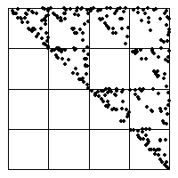

4. (b) Here is the Driven IFS.
|  |
| All the data points lie in bins 2, 3, and 4, so in the driven IFS only transformations T2, T3 and T4 are applied. |
| All combinations of these transformations generate the gasket with
vertices |
| The data do not appear to exhibit a pattern within these bins, so the driven IFS is likely a fairly complete subset of that gasket. |
Return to Exercises.